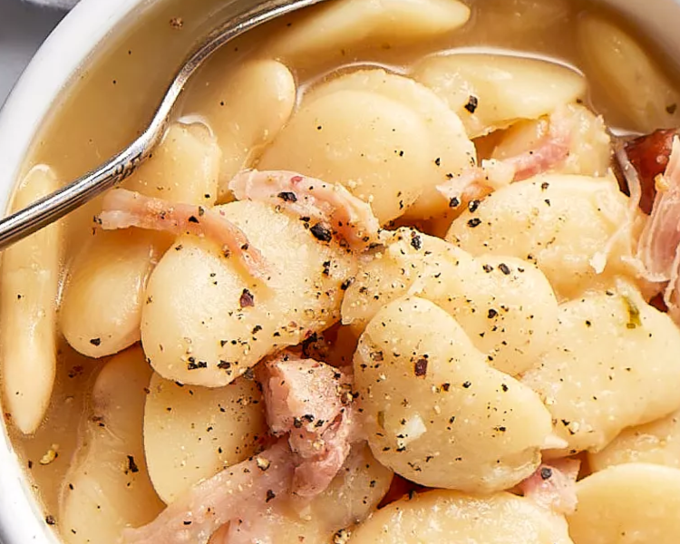
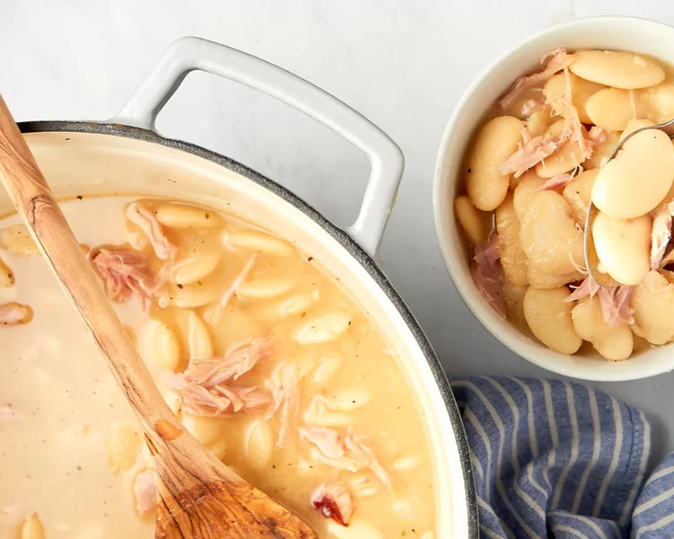

Prep Time: 15 mins
Cook Time: 2 hrs
Total Time: 2 hrs 15 mins
Servings: 6 to 8 servings
Ingredients
- 1 pound dry large lima beans
- 1/2 large white onion, chopped (about 1 1/2 cups)
- 4 cloves garlic, finely chopped
- 1 tablespoon garlic powder
- 1 tablespoon onion powder
- 2 teaspoons salt
- 1 teaspoon black pepper
- 1 bay leaf
- 2 smoked turkey wings
- 8 cups chicken stock (preferably unsalted or low-sodium)
- Additional salt and pepper to taste
Instructions
- Pick over the dry beans: Pick over the beans, removing any dirt or debris. Rinse the beans in a colander; drain.
- Cook the beans:
- Place the beans, onion, garlic cloves, garlic powder, onion powder, salt, black pepper, bay leaf, and turkey wings in a large Dutch oven or pot.
- Add the stock. Bring to a boil over medium-high heat.
- Once it starts to boil, decrease the heat to medium-low. Cover with a lid.
- Simmer for up to 2 hours or until the beans are tender to your liking. Make sure to stir the mixture a few times while cooking for a creamier sauce.
- Pick the meat from the turkey wings:
- Using tongs, remove the turkey wings and let them cool until you can comfortably handle them. Remove the cooked meat from the bones using a fork and shred; discard the skin. Place the meat back in the pot.
- Remove the bay leaf; discard.
- Season and serve: Taste the beans and season with additional salt and pepper, if needed. Serve warm.